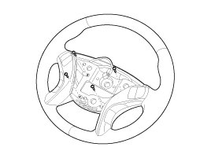
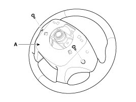
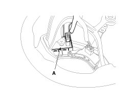
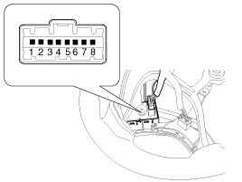

Cruise Control Switch: Service and Repair
Removal and Installation
1. Disconnect the battery negative terminal.
Tightening torque:
4.0 - 6.0 N.m (0.4 - 0.6 kgf.m, 3.0 - 4.4 lb-ft)
2. Remove the air-bag module from the steering wheel.
3. Remove the steering wheel.
4. Remove the rear cover (A) after unfastening the screws.


5. Remove the cruise control switch (A) after unfastening the screws and disconnecting the switch connector.

6. Installation is reverse order of removal.
Inspection
[Measuring Resistance]
1. Disconnect the cruise control switch connector from the control switch.

2. Measure resistance between terminals on the control switch when each function switch is ON (switch is depressed).
3. If not within specification, replace switch.
[Measuring Voltage]
1. Connect the cruise control switch connector to the control switch.
2. Measure voltage between terminals on the harness side connector when each function switch is ON (switch is depressed).
3. If not within specification, inspect the control switch resistance.
The measuring resistance value is not within specification, replace the switch and measure the voltage again.
4. If resistance is OK but, measuring voltage is not within specification, inspect the wiring harness and connectors between the switch and the ECM.